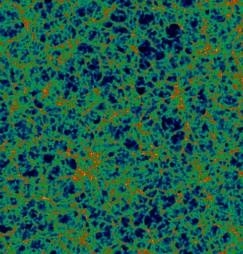

Chaos comes before all principles of order & entropy, it's neither a god nor a maggot, its idiotic desires encompass & define every possible choreography, all meaningless aethers & phlogistons: its masks are crystallizations of its own facelessness, like clouds.
Everything in nature is perfectly real including consciousness, there's absolutely nothing to worry about. Not only have the chains of the Law been broken, they never existed; demons never guarded the stars, the Empire never got started, Eros never grew a beard.
No, listen, what happened was this: they lied to you, sold you ideas of good & evil, gave you distrust of your body & shame for your prophethood of chaos, invented words of disgust for your molecular love, mesmerized you with inattention, bored you with civilization & all its usurious emotions.
There is no becoming, no revolution, no struggle, no path; already you're the monarch of your own skin—your inviolable freedom waits to be completed only by the love of other monarchs: a politics of dream, urgent as the blueness of sky.
To shed all the illusory rights & hesitations of history demands the economy of some legendary Stone Age—shamans not priests, bards not lords, hunters not police, gatherers of paleolithic laziness, gentle as blood, going naked for a sign or painted as birds, poised on the wave of explicit presence, the clockless nowever.
Agents of chaos cast burning glances at anything or anyone capable of bearing witness to their condition, their fever of lux et voluptas. I am awake only in what I love & desire to the point of terror—everything else is just shrouded furniture, quotidian anaesthesia, shit-for-brains, sub-reptilian ennui of totalitarian regimes, banal censorship & useless pain.
Avatars of chaos act as spies, saboteurs, criminals of amour fou, neither selfless nor selfish, accessible as children, mannered as barbarians, chafed with obsessions, unemployed, sensually deranged, wolfangels, mirrors for contemplation, eyes like flowers, pirates of all signs & meanings.
Here we are crawling the cracks between walls of church state school & factory, all the paranoid monoliths. Cut off from the tribe by feral nostalgia we tunnel after lost words, imaginary bombs.
The last possible deed is that which defines perception itself, an invisible golden cord that connects us: illegal dancing in the courthouse corridors. If I were to kiss you here they'd call it an act of terrorism—so let's take our pistols to bed & wake up the city at midnight like drunken bandits celebrating with a fusillade, the message of the taste of chaos.
